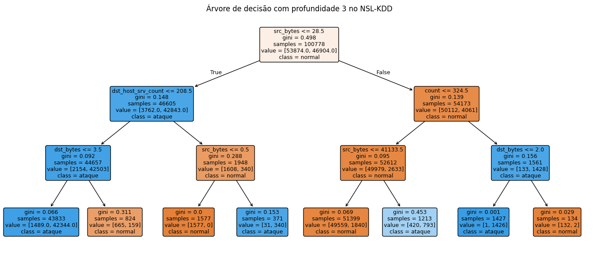
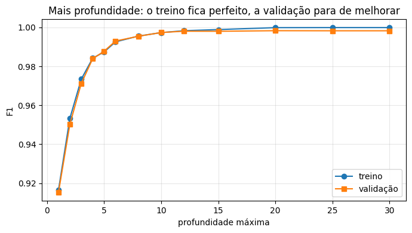
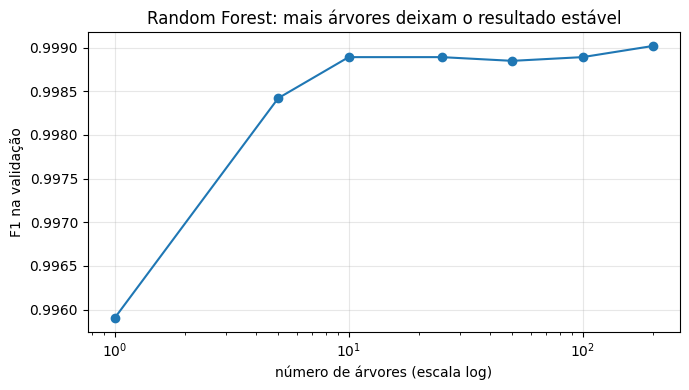
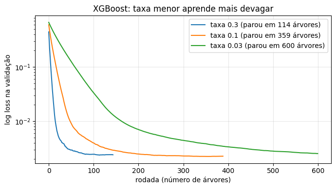
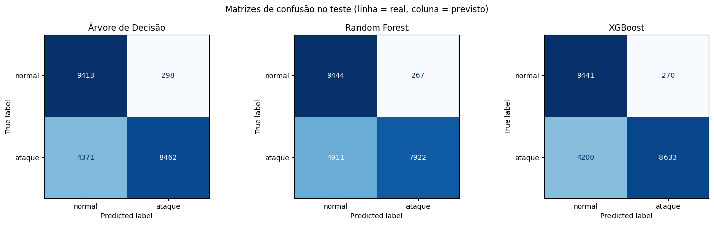
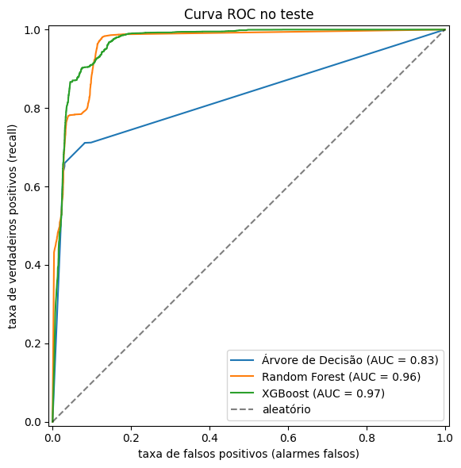
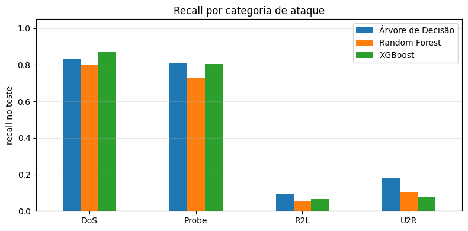
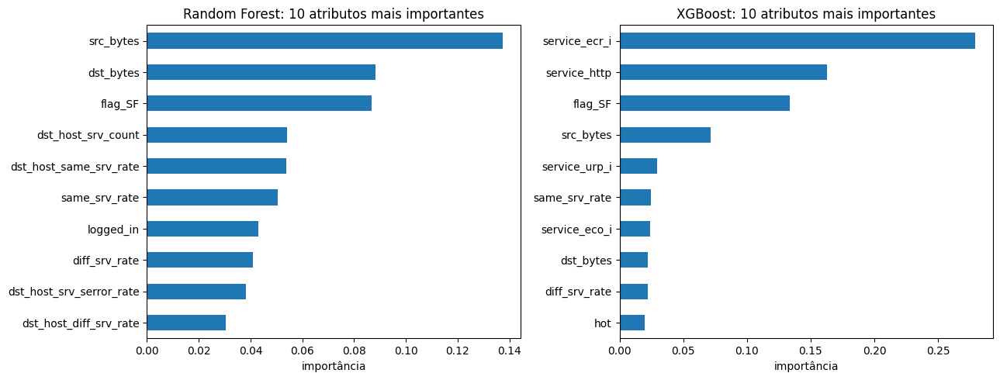

Um ataque que ninguém viu chegar
Imagine um sistema que olha cada conexão da rede e decide: normal ou ataque. Ele foi treinado com milhares de ataques conhecidos e acerta quase tudo nos testes do laboratório. Aí aparece um tipo de ataque novo, que não estava nos dados de treino, e ele passa direto.
Esse é o problema real de um detector de intrusão (IDS, do inglês Intrusion Detection System). No nosso experimento ele apareceu com números. Dentro dos dados de treino, os três modelos acertaram mais de 99,8% dos casos. No teste, que tem 17 tipos de ataque nunca vistos, todos deixaram passar cerca de um terço dos ataques.
Estudos publicados com o mesmo conjunto de dados chegam a 99% de acurácia (Osco Vasquez, 2025 [4]). Neste artigo mostramos por que os nossos números são bem menores, e por que achamos que eles retratam melhor o problema real.
O que você vai aprender
- Como uma Árvore de Decisão classifica uma conexão, lendo uma árvore treinada de verdade.
- Por que juntar muitas árvores em paralelo (Random Forest) reduz a variância, e por que juntá-las em sequência (XGBoost) reduz o viés.
- Como comparar modelos de forma justa e quais métricas usar quando a acurácia engana.
- Qual modelo escolhemos para o detector, e onde os três falham.
O texto é para quem já programa em Python mas tem pouca experiência com aprendizado de máquina. Todo termo técnico é explicado na primeira vez que aparece, e as fórmulas ficam em caixas de aprofundamento que você pode pular.
Vocabulário mínimo
Estes termos aparecem em todo o texto. Os outros, vamos definindo conforme aparecem.
- Atributo
- Uma característica da conexão que o modelo usa para decidir, como o número de bytes enviados ou o protocolo.
- Classe ou rótulo
- A resposta certa de cada exemplo. Aqui são duas: normal ou ataque.
- Treino, validação e teste
- O treino é o que o modelo usa para aprender. A validação é uma parte separada do treino, usada para escolher configurações. O teste fica guardado até o fim e mede como o modelo se sai com dados que nunca viu.
- Hiperparâmetro
- Uma configuração escolhida antes do treino, como a profundidade máxima de uma árvore.
- Overfitting
- Quando o modelo decora o treino, inclusive o ruído, e erra mais em dados novos.
- Falso negativo e falso positivo
- Falso negativo é um ataque que o modelo chamou de normal: um ataque que passou. Falso positivo é uma conexão normal chamada de ataque: um alarme falso.
- Acurácia
- A fração de todas as conexões que o modelo classificou certo. Engana quando um tipo de erro importa mais que o outro.
- Precisão
- Dos fluxos que o modelo chamou de ataque, a fração que era ataque mesmo. Cai quando há muitos alarmes falsos.
- Recall
- Dos ataques reais, a fração que o modelo pegou. Cai quando muitos ataques passam.
- F1
- Um número de 0 a 1 que combina precisão e recall (a média harmônica dos dois). Só é alto quando os dois são altos.
Árvore de Decisão: uma sequência de perguntas
Uma árvore de decisão classifica fazendo perguntas de sim ou não sobre os atributos, uma depois da outra, até chegar a uma resposta. Cada pergunta é um nó, e cada resposta final é uma folha.
Primeiro, uma árvore pequena
Vamos treinar uma árvore com só 7 atributos e no máximo 3 perguntas seguidas (profundidade 3). O caminho do topo da página é um dos que ela aprendeu: se a conexão enviou 28 bytes ou menos, o destino recebeu poucas conexões para o mesmo serviço e quase não respondeu, é ataque.
Faz sentido: uma conexão que não manda nem recebe dados é típica de varreduras e de ataques de negação de serviço, que abrem conexões só para ocupar o servidor. Com só essas regras, a árvore pequena já chega a F1 de 0,957 na validação.
from sklearn.tree import DecisionTreeClassifier, export_text
# árvore pequena e poucos atributos: dá para ler as regras
poucos = ["src_bytes", "dst_bytes", "count", "same_srv_rate",
"dst_host_srv_count", "logged_in", "serror_rate"]
# max_depth=3: no máximo três perguntas até chegar a uma resposta
arvore_rasa = DecisionTreeClassifier(max_depth=3,
random_state=SEED)
arvore_rasa.fit(X_tr[poucos], y_tr)
# imprime as regras em texto
print(export_text(arvore_rasa, feature_names=poucos))Trecho do notebook, seção 2. X_tr é o treino sem a parte separada para validação; as regras impressas incluem o caminho mostrado no topo da página.

Como a árvore escolhe a pergunta
Em cada nó, a árvore testa várias perguntas possíveis e fica com a que separa melhor as classes. Separar melhor quer dizer deixar cada lado o mais puro possível, só com normais ou só com ataques. As medidas mais usadas para isso são o índice de Gini e a entropia.
Aprofundamento: Gini e entropia
Se pk é a fração de exemplos da classe k num nó, o Gini mede a chance de errar ao sortear um rótulo, e a entropia mede a surpresa. Os dois valem 0 num nó puro e são máximos quando as classes estão meio a meio.
Gini = 1 − Σk pk2 Entropia = − Σk pk log2 pk
Exemplo: um nó com 50 normais e 50 ataques tem Gini = 1 − (0,5² + 0,5²) = 0,5. Um nó com 90 ataques e 10 normais tem Gini = 1 − (0,9² + 0,1²) = 0,18.
O problema: overfitting
Se deixarmos a árvore crescer sem limite, ela continua criando perguntas até acertar cada exemplo do treino, inclusive os casos estranhos e o ruído. Isso é overfitting: o modelo decora o treino em vez de aprender o padrão.
No nosso gráfico, a partir da profundidade 20 o F1 no treino chega a 1,0, enquanto o da validação para em cerca de 0,998. A distância parece pequena porque a validação vem da mesma distribuição do treino. O preço real do overfitting só aparece no teste, com ataques novos (resultados).

Para controlar isso usamos hiperparâmetros, que são configurações escolhidas antes do treino: a profundidade máxima, o número mínimo de exemplos por folha e a poda, que corta galhos que quase não ajudam.
Outro problema: variância
Uma árvore também é sensível aos dados. Treinamos 10 árvores, cada uma numa amostra um pouco diferente do treino, e o F1 variou com desvio padrão de 0,0003. Parece pouco, mas as árvores aprendidas podem ser bem diferentes entre si. Essa instabilidade se chama variância, e é ela que a Random Forest ataca.
Quando usar: quando alguém precisa ler e auditar a regra, quando a decisão tem que ser muito rápida, ou como ponto de partida para entender os dados.
Random Forest: muitas árvores votando
Se uma árvore sozinha é instável, a ideia da Random Forest é treinar muitas árvores diferentes e deixar que elas votem. O erro de uma tende a ser compensado pelas outras (Breiman, 2001 [1]).
Como as árvores ficam diferentes
Se todas as árvores vissem os mesmos dados, aprenderiam a mesma coisa. Por isso a floresta usa duas fontes de sorteio:
- Amostra bootstrap: cada árvore é treinada numa amostra sorteada do treino com reposição, do mesmo tamanho do original. Alguns exemplos aparecem repetidos e uns 37% ficam de fora.
- Seleção aleatória de atributos: em cada nó, a árvore só pode escolher a pergunta dentro de um sorteio de atributos (no nosso melhor modelo, a raiz quadrada do total,
max_features="sqrt").
No final, cada árvore vota em normal ou ataque, e vence a maioria. Esse processo de sortear amostras e juntar os votos se chama bagging (de bootstrap aggregating).
Mais árvores, resultado mais estável
Com uma árvore só, o F1 na validação foi 0,9959. Com 10 árvores subiu para 0,9989 e, a partir daí, praticamente parou de mudar. Também repetimos o teste de variância: 10 florestas treinadas em amostras diferentes tiveram desvio padrão de 0,0001, um terço do desvio das árvores sozinhas.

Erro out-of-bag: uma validação de graça
Como cada árvore deixa uns 37% do treino de fora, dá para avaliar cada exemplo só com as árvores que não o viram. Isso é o erro out-of-bag (OOB). Na nossa floresta de 200 árvores ele ficou em 0,12%, bem perto do que medimos na validação separada.
Importância dos atributos
A floresta não dá para ler árvore por árvore, mas ela calcula quanto cada atributo ajudou a separar as classes, somando todas as árvores. Isso é a importância dos atributos, que mostramos nos resultados.
Quando usar: quando a árvore sozinha é instável demais, quando queremos um bom resultado sem muito ajuste e quando o tempo de predição não é crítico, já que cada fluxo passa por centenas de árvores.
XGBoost: árvores que corrigem as anteriores
Na Random Forest as árvores são treinadas ao mesmo tempo, sem uma saber da outra. No boosting é o contrário: as árvores são construídas em sequência, e cada nova árvore tenta corrigir os erros que as anteriores ainda cometem (veja a figura 3).
A ideia com um exemplo
Pense numa conexão de ataque que a primeira árvore classificou com só 30% de chance de ser ataque. O erro dela é grande. A segunda árvore é treinada justamente para empurrar essa previsão na direção certa. A terceira corrige o que sobrou, e assim por diante. A resposta final é a soma das contribuições de todas as árvores.
Quando essa correção segue o gradiente (a direção em que o erro diminui mais rápido), o método se chama gradient boosting. O XGBoost (eXtreme Gradient Boosting) é uma implementação de gradient boosting que acrescenta regularização e várias otimizações de velocidade (Chen e Guestrin, 2016 [2]; documentação oficial [6]).
Taxa de aprendizado e número de rodadas
A taxa de aprendizado (learning_rate) diz quanto cada árvore nova pode mudar a previsão. Uma taxa alta aprende rápido, mas pode passar do ponto. Uma taxa baixa aprende com mais cuidado, mas precisa de mais árvores, que chamamos de rodadas.
No nosso teste, com taxa 0,3 o modelo parou em 114 árvores. Com 0,1 precisou de 359. Com 0,03 chegou ao limite de 600 árvores ainda melhorando devagar.

Early stopping contra overfitting
Como cada árvore corrige a anterior, o boosting pode continuar corrigindo até decorar o ruído do treino. O early stopping (parada antecipada) evita isso: acompanhamos o erro numa validação e paramos quando ele fica 30 rodadas sem melhorar.
from xgboost import XGBClassifier
# early stopping: para após 30 rodadas sem melhorar na validação
xgb = XGBClassifier(n_estimators=600, # limite de rodadas
learning_rate=0.1,
max_depth=6,
eval_metric="logloss",
early_stopping_rounds=30,
random_state=SEED)
xgb.fit(X_tr, y_tr, eval_set=[(X_val, y_val)], verbose=False)
print("parou em", xgb.best_iteration + 1, "árvores")Trecho do notebook, seção 3. X_val é a validação separada do treino: o teste não entra aqui.
Regularização
O XGBoost também penaliza árvores complicadas demais. Essa penalidade é a regularização, controlada por hiperparâmetros como reg_lambda e max_depth. Além disso, subsample e colsample_bytree sorteiam linhas e colunas para cada árvore, uma ideia parecida com a da Random Forest.
Aprofundamento: o objetivo do XGBoost
O modelo minimiza a soma do erro de cada exemplo (l) com uma penalidade (Ω) para cada árvore f. Na penalidade, T é o número de folhas, w são os valores das folhas, e γ e λ são hiperparâmetros.
ℒ = Σi l(yi, ŷi) + Σk Ω(fk), Ω(f) = γT + ½ λ ‖w‖2
Quanto maior o λ (reg_lambda), mais os valores das folhas são puxados para zero, e mais cada árvore precisa justificar sua contribuição. A dedução completa está em Chen e Guestrin (2016) [2] e na documentação oficial.
Quando usar: quando o desempenho é a prioridade, quando há tempo para ajustar hiperparâmetros e quando é possível conviver com um modelo mais difícil de explicar.
Bagging × boosting: viés e variância
Árvore, floresta e boosting usam o mesmo bloco de construção, a árvore. O que muda é como as árvores são combinadas, e cada forma ataca um tipo diferente de erro.
- Variância é o quanto o modelo muda se os dados mudarem um pouco. Uma árvore funda tem variância alta: aprende detalhes demais de cada amostra.
- Viés é um erro sistemático, de um modelo simples demais para o padrão. Uma árvore de profundidade 1 tem viés alto: uma pergunta só não separa os ataques.
A floresta reduz a variância: cada árvore funda erra de um jeito diferente, e na média dos votos esses erros se cancelam. Ela não corrige um erro que todas as árvores cometem juntas.
O boosting reduz o viés: começa com árvores rasas, que sozinhas são simples demais, e cada nova árvore ataca justamente o erro que sobrou. Por isso ele costuma usar árvores menores (nosso melhor XGBoost tem profundidade 6, a melhor floresta chega a 30). O risco é passar a corrigir ruído, e por isso ele precisa de taxa de aprendizado, regularização e early stopping.
Quadro comparativo
| Árvore de Decisão | Random Forest | XGBoost | |
|---|---|---|---|
| Como funciona | Uma sequência de perguntas até uma folha | Muitas árvores em paralelo, com bootstrap e sorteio de atributos, decidindo por voto | Árvores em sequência, cada uma corrigindo o erro das anteriores |
| Vantagens | Fácil de ler, treino e predição muito rápidos | Estável, funciona bem com pouco ajuste, erro OOB grátis | Em geral o melhor desempenho, tem regularização e early stopping |
| Desvantagens | Instável, faz overfitting fácil | Pesada para prever (centenas de árvores), difícil de ler | Muitos hiperparâmetros, sensível ao ajuste, difícil de ler |
| Interpretabilidade | Alta: dá para auditar cada regra | Baixa: só a importância dos atributos | Baixa: importância dos atributos ou SHAP (um método que mostra quanto cada atributo pesou numa decisão específica) |
| Tempo de treino (nosso teste) | 1,7 s | 27,1 s | 15,5 s |
| Risco de overfitting | Alto sem poda ou limite de profundidade | Baixo | Médio: controlado por taxa, regularização e early stopping |
| Erro que reduz | (modelo base) | Variância | Viés |
| Cenário ideal | Decisão que precisa ser explicada ou muito rápida | Bom resultado com pouco ajuste, sem pressa na predição | Desempenho máximo com tempo para ajustar |
O experimento: detector de intrusão com o NSL-KDD
Treinamos os três modelos nos mesmos dados, com a mesma divisão e a mesma semente (SEED = 42), e demos a cada um o mesmo esforço de ajuste.
Os dados
O NSL-KDD é um conjunto público de conexões de rede rotuladas, uma versão corrigida do KDD Cup 99 sem registros duplicados (Tavallaee et al., 2009 [3]; CIC/UNB [7]). Cada conexão tem 41 atributos, como duração, protocolo, serviço, bytes enviados e taxas de erro. O alvo que escolhemos é binário: normal (0) ou ataque (1). Os ataques se dividem em quatro categorias:
- DoS: derrubar um serviço com excesso de requisições;
- Probe: varredura em busca de máquinas e portas abertas;
- R2L: acesso remoto sem ter conta na máquina, como adivinhar senha;
- U2R: um usuário comum tentando virar administrador (root).
Como dividimos treino e teste
Usamos a divisão oficial: KDDTrain+ para treino (125.973 conexões, 46,5% ataques) e KDDTest+ para teste (22.544 conexões, 56,9% ataques). O teste tem 17 tipos de ataque que não existem no treino, que somam 3.750 conexões (16,6% do teste). É o caso realista de um ataque novo, e por isso não usamos uma divisão aleatória.
Dos 41 atributos, três são texto (protocol_type, service e flag) e viraram colunas de 0 e 1 (one-hot), chegando a 122 atributos. Para os gráficos didáticos das seções anteriores, separamos 20% do treino como validação. O teste só foi usado uma vez, no final.
Ajuste honesto
Comparar uma árvore sem ajuste com um XGBoost ajustado não prova nada. Por isso cada modelo passou pela mesma busca: 15 combinações de hiperparâmetros sorteadas (RandomizedSearchCV), validação cruzada estratificada de 3 dobras só no treino, e escolha pelo F1.
Na validação cruzada, o treino é dividido em 3 partes (dobras). O modelo treina em duas e é avaliado na terceira, revezando até cada parte ter sido usada como avaliação. Estratificada quer dizer que cada dobra mantém a mesma proporção de ataques do treino inteiro.
from sklearn.model_selection import (RandomizedSearchCV,
StratifiedKFold)
from scipy.stats import randint, loguniform
# mesma busca para os três modelos: 15 combinações, 3 dobras, F1
cv = StratifiedKFold(n_splits=3, shuffle=True, random_state=SEED)
busca = RandomizedSearchCV(
XGBClassifier(random_state=SEED, eval_metric="logloss"),
{"n_estimators": randint(100, 501),
"learning_rate": loguniform(0.01, 0.3),
"max_depth": randint(3, 11),
"reg_lambda": loguniform(0.1, 10)}, # regularização
n_iter=15, cv=cv, scoring="f1", random_state=SEED)
busca.fit(X_train, y_train) # só o treino entra aqui
print(busca.best_params_)Trecho do notebook, seção 4, mostrando só o XGBoost. A árvore e a floresta passam pela mesma busca, com o mesmo cv e o mesmo n_iter.
Como medimos
Cada modelo final foi treinado no treino inteiro com os melhores hiperparâmetros. Medimos:
- Precisão, recall e F1, como definimos no vocabulário.
- Matriz de confusão: a contagem de acertos e erros de cada tipo.
- Tempo de treino e latência: quanto tempo leva para decidir um fluxo só (mediana de 200 tentativas).
Não usamos só a acurácia porque ela esconde o tipo de erro. Num detector de intrusão, um falso negativo (ataque não detectado) pode significar uma invasão. Um falso positivo (alarme falso) custa tempo do analista e, se for frequente demais, faz a equipe ignorar os alertas.
import time
import numpy as np
# latência de um fluxo só: o caso de decidir em tempo quase real
tempos = []
for _ in range(200):
inicio = time.perf_counter()
modelo.predict(um_fluxo)
tempos.append(time.perf_counter() - inicio)
print("latência (ms):", 1000 * np.median(tempos))Trecho do notebook, seção 5. um_fluxo é uma única conexão do teste, e usamos a mediana para que uma medição lenta não distorça o resultado.
Usamos o scikit-learn (Pedregosa et al., 2011 [5]) para a árvore e a floresta, e a biblioteca xgboost para o boosting.
Versões: Python 3.13, scikit-learn 1.6.1, xgboost 3.4.1, pandas 2.2.3, numpy 2.1.3 (Google Colab). O notebook completo, com todas as saídas, está no repositório: notebooks/experimento.ipynb.
Resultados
O XGBoost teve o melhor F1 (0,794) e deixou passar menos ataques, mas os três modelos perderam cerca de um terço dos ataques do teste.
| Modelo | F1 | Recall | Precisão | Acurácia | Ataques perdidos | Alarmes falsos |
|---|---|---|---|---|---|---|
| XGBoost | 0,794 | 0,673 | 0,970 | 0,802 | 4.200 | 270 |
| Árvore de Decisão | 0,784 | 0,659 | 0,966 | 0,793 | 4.371 | 298 |
| Random Forest | 0,754 | 0,617 | 0,967 | 0,770 | 4.911 | 267 |
| Modelo | Treino (s) | Teste inteiro (ms) | Latência de 1 fluxo (ms) |
|---|---|---|---|
| XGBoost | 15,5 | 331 | 14,7 |
| Árvore de Decisão | 1,7 | 13 | 1,6 |
| Random Forest | 27,1 | 446 | 77,7 |
Na validação cruzada, dentro do treino, os três tinham F1 entre 0,998 e 0,999. A queda para 0,75 a 0,79 no teste vem dos ataques novos, como mostramos abaixo.

Os três modelos quase não dão alarme falso (precisão de 97%), mas todos deixam passar muitos ataques. Para um detector de intrusão, esse é o pior lado para errar.
Curva ROC: o problema está no limiar
Cada modelo dá uma probabilidade de ataque, e o padrão é chamar de ataque quando ela passa de 0,5. A curva ROC mostra o que aconteceria com outros limiares, e a AUC (área sob a curva) resume isso num número de 0,5 (sorteio) a 1 (perfeito).

O XGBoost e a Random Forest separam bem os ataques, mas o limiar de 0,5 é conservador demais para os ataques novos. Pela curva, aceitando uns 10% de alarmes falsos, o XGBoost chegaria perto de 90% de recall. Não escolhemos esse limiar, porque usar o teste para isso seria vazamento de dados: o teste deixaria de medir o comportamento com ataques nunca vistos.
Onde os modelos erram: recall por categoria
| Modelo | DoS | Probe | R2L | U2R | Tipos conhecidos | Tipos novos |
|---|---|---|---|---|---|---|
| XGBoost | 0,870 | 0,806 | 0,066 | 0,075 | 0,773 | 0,430 |
| Árvore de Decisão | 0,833 | 0,809 | 0,093 | 0,180 | 0,774 | 0,383 |
| Random Forest | 0,801 | 0,732 | 0,057 | 0,105 | 0,769 | 0,249 |
| Nº de ataques no teste | 7.458 | 2.421 | 2.754 | 200 | 9.083 | 3.750 |
Dois achados. Primeiro, nos ataques de tipos conhecidos os três empatam (recall de cerca de 77%), e a diferença entre eles aparece nos ataques novos: o XGBoost pegou 43%, a Random Forest só 25%. Segundo, R2L e U2R quase não são detectados por nenhum modelo, com recall abaixo de 20%. Esses ataques se parecem com uso normal (um login, um comando) e têm poucos exemplos no treino.

Interpretabilidade
A árvore final tem profundidade 20 e 205 folhas. Dá para seguir e auditar o caminho de qualquer decisão, mas não para ler o modelo inteiro. A Random Forest tem 253 árvores e o XGBoost 393: para eles, usamos a importância dos atributos.

Na Random Forest pesam mais os bytes enviados e recebidos (src_bytes, dst_bytes). No XGBoost lidera service_ecr_i, que é a requisição de ping (ICMP echo), típica do ataque smurf. Os dois concordam em flag_SF (conexão encerrada normalmente) e src_bytes. Cuidado ao comparar: cada biblioteca mede importância de um jeito, e importância alta não quer dizer que o atributo causa o ataque.
Recomendação: XGBoost, com a árvore como plano B
Para o nosso detector de intrusão, escolhemos o XGBoost.
Não foi só porque ele ficou no topo da tabela, mas porque ganhou no critério que mais importa nesse problema: o custo dos erros.
- Custo dos erros. Um ataque não detectado é muito mais caro que um alarme falso. O XGBoost deixou passar 4.200 ataques, contra 4.371 da árvore e 4.911 da Random Forest, sem aumentar os alarmes falsos (270).
- Ataques novos. É o problema que motiva o artigo. O XGBoost detectou 43% dos ataques de tipos nunca vistos, contra 38% da árvore e 25% da Random Forest.
- Margem para melhorar. Com AUC de 0,97, o XGBoost é o modelo que mais ganharia com um limiar ajustado de forma correta, numa validação que tenha ataques novos.
- Latência. Cerca de 15 ms por fluxo, rápido o bastante para decidir quase em tempo real.
O preço é a interpretabilidade. Ninguém audita 393 árvores à mão. Por isso mostramos a importância dos atributos, e o próximo passo seria usar SHAP para explicar cada alerta individualmente, mostrando quais atributos levaram àquela decisão.
Quando escolheríamos a árvore. Se o cenário exigisse explicar cada alerta para um analista ou ter latência mínima (1,6 ms, cerca de 10 vezes mais rápida), a árvore seria a escolha. Ela ficou só 1 ponto atrás no F1 e foi a melhor em R2L e U2R.
Por que não a Random Forest. Aqui ela foi a pior nas três frentes: menor recall, pior nos ataques novos e mais lenta para prever. Isso não quer dizer que ela seja ruim em geral: em outros estudos com dados de redes ela supera o XGBoost. Não existe um vencedor universal; depende dos dados, das classes e do ajuste.
Limitações
Somos honestos sobre o que este experimento não mostra:
- Uma execução, uma semente. A diferença de 1 ponto de F1 entre o XGBoost e a árvore pode não se manter com outras sementes. O ideal seria repetir com várias e comparar as médias.
- Latência inflada. A Random Forest e o XGBoost foram configurados com
n_jobs=-1(usar todos os núcleos). Para prever um fluxo só, o custo de dividir o trabalho entre núcleos pesa mais que a predição. Os 77,7 ms da Random Forest são, em boa parte, esse custo. - Ataques novos continuam difíceis. Nenhum dos três passou de 43% nos ataques nunca vistos. Aprendizado supervisionado só reconhece o que já viu; na prática, ele precisa ser combinado com detecção de anomalias e com regras de especialistas.
- R2L e U2R quase não são detectados. São poucos exemplos e muito parecidos com uso normal. Técnicas de balanceamento de classes poderiam ajudar, mas precisam ser validadas sem tocar no teste.
- Limiar padrão. Mantivemos o limiar de 0,5 de propósito. Ajustá-lo é o trabalho futuro mais promissor, desde que com um conjunto de validação próprio.
- NSL-KDD é antigo. O conjunto vem de tráfego simulado de 1998. Ele serve para comparar métodos, mas não representa uma rede atual. Conjuntos como UNSW-NB15 e CIC-IDS2017 seriam o próximo passo.
Para ir além
Poucos links, escolhidos a dedo. Cada um tem uma linha dizendo por que vale a leitura.
- DataCamp: aprendizado em conjunto em Python. Tutorial em português que mostra bagging e boosting com código num conjunto de dados real.
- Documentação do XGBoost: introdução a árvores com boosting. A explicação oficial de como o XGBoost monta e regulariza as árvores.
- scikit-learn: métodos de ensemble. A documentação da Random Forest, com o erro OOB e a importância dos atributos.
- scikit-learn: árvores de decisão. Critérios de divisão, poda e as vantagens e desvantagens das árvores.
- Osco Vasquez (2025): estudo multiclasse com NSL-KDD. Compara os mesmos modelos no mesmo conjunto e chega a cerca de 99% de acurácia, útil para discutir como a divisão dos dados muda os números.
Referências
- BREIMAN, L. Random Forests. Machine Learning, v. 45, p. 5–32, 2001. doi:10.1023/A:1010933404324
- CHEN, T.; GUESTRIN, C. XGBoost: A Scalable Tree Boosting System. In: Proceedings of the 22nd ACM SIGKDD International Conference on Knowledge Discovery and Data Mining, 2016. arXiv:1603.02754
- TAVALLAEE, M. et al. A detailed analysis of the KDD CUP 99 data set. In: IEEE Symposium on Computational Intelligence for Security and Defense Applications, 2009. doi:10.1109/CISDA.2009.5356528
- OSCO VASQUEZ, L. M. Detección de intrusiones en redes mediante algoritmos de aprendizaje automático: un estudio multiclase sobre el conjunto de datos NSL-KDD. arXiv:2512.03200, 2025. arxiv.org/abs/2512.03200
- PEDREGOSA, F. et al. Scikit-learn: Machine Learning in Python. Journal of Machine Learning Research, v. 12, p. 2825–2830, 2011.
- XGBOOST DEVELOPERS. Introduction to Boosted Trees. Documentação oficial do XGBoost. xgboost.readthedocs.io
- CANADIAN INSTITUTE FOR CYBERSECURITY. NSL-KDD dataset. University of New Brunswick. unb.ca/cic/datasets/nsl.html
Autores
-

Davi Gabriel Borges dos Santos
Ciência da Computação, 4º semestre. área de interesse
GitHub [LinkedIn]
-
Fernanda Akemi Martins Sanpei
Ciência da Computação, 4º semestre. Desenvolvimento Web.
-

Geziel de Andrade
Ciência da Computação, 4º semestre. área de interesse
GitHub [LinkedIn]
-

Hendrick Ambriola
Ciência da Computação, 4º semestre. área de interesse
GitHub [LinkedIn]
-

Isaac William
Ciência da Computação, 4º semestre. área de interesse
GitHub [LinkedIn]